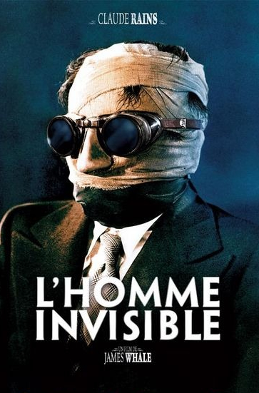

ABOUT ME
Забегая далеко вперед, скажу решительно о том, что этот фильм я пересматривать готов, и не единожды. Я люблю его и любил всегда. Совсем неудивительно, ведь картину режиссера Фрэнка Капры - It Happened One Night - можно, без тени сомнения, назвать одной из лучших комедий за всю историю кино. Уверен, что ничего нового я, в этом смысле, не открыл. Рейтинг этого творения дает явный намек на то, что оно пришлось по вкусу буквально каждому. Тут, можно сказать, наши впечатления совпали, и это, в общем-то, приятно. В какой-то степени, успех ленты Это Случилось Однжды Ночью оказался, в свое время, весьма и весьма неожиданным. Только представьте, несколько актеров и актрис попросту отказались работать в этом проекте, считая, к примеру, его сценарий ужасным. А исполнительница главной женской роли - Клодетт Кольбер, - которую мы теперь и видим в кадре, и вовсе была убеждена, что это станет худшей работой в ее творческой карьере. Не могу сказать, что она мне симпатична, но фильм настолько прекрасен, что об этом почти сразу забываешь. Глоток свежего воздуха секрет обаяния фильма. Реальная жизнь в комическом стиле.
Забегая далеко вперед, скажу решительно о том, что этот фильм я пересматривать готов, и не единожды. Я люблю его и любил всегда. Совсем неудивительно, ведь картину режиссера Фрэнка Капры - It Happened One Night - можно, без тени сомнения, назвать одной из лучших комедий за всю историю кино. Уверен, что ничего нового я, в этом смысле, не открыл. Рейтинг этого творения дает явный намек на то, что оно пришлось по вкусу буквально каждому. Тут, можно сказать, наши впечатления совпали, и это, в общем-то, приятно. В какой-то степени, успех ленты Это Случилось Однжды Ночью оказался, в свое время, весьма и весьма неожиданным. Только представьте, несколько актеров и актрис попросту отказались работать в этом проекте, считая, к примеру, его сценарий ужасным. А исполнительница главной женской роли - Клодетт Кольбер, - которую мы теперь и видим в кадре, и вовсе была убеждена, что это станет худшей работой в ее творческой карьере. Не могу сказать, что она мне симпатична, но фильм настолько прекрасен, что об этом почти сразу забываешь. Глоток свежего воздуха секрет обаяния фильма. Реальная жизнь в комическом стиле.
Забегая далеко вперед, скажу решительно о том, что этот фильм я пересматривать готов, и не единожды. Я люблю его и любил всегда. Совсем неудивительно, ведь картину режиссера Фрэнка Капры - It Happened One Night - можно, без тени сомнения, назвать одной из лучших комедий за всю историю кино. Уверен, что ничего нового я, в этом смысле, не открыл. Рейтинг этого творения дает явный намек на то, что оно пришлось по вкусу буквально каждому. Тут, можно сказать, наши впечатления совпали, и это, в общем-то, приятно. В какой-то степени, успех ленты Это Случилось Однжды Ночью оказался, в свое время, весьма и весьма неожиданным. Только представьте, несколько актеров и актрис попросту отказались работать в этом проекте, считая, к примеру, его сценарий ужасным. А исполнительница главной женской роли - Клодетт Кольбер, - которую мы теперь и видим в кадре, и вовсе была убеждена, что это станет худшей работой в ее творческой карьере. Не могу сказать, что она мне симпатична, но фильм настолько прекрасен, что об этом почти сразу забываешь. Глоток свежего воздуха секрет обаяния фильма. Реальная жизнь в комическом стиле.
Забегая далеко вперед, скажу решительно о том, что этот фильм я пересматривать готов, и не единожды. Я люблю его и любил всегда. Совсем неудивительно, ведь картину режиссера Фрэнка Капры - It Happened One Night - можно, без тени сомнения, назвать одной из лучших комедий за всю историю кино. Уверен, что ничего нового я, в этом смысле, не открыл. Рейтинг этого творения дает явный намек на то, что оно пришлось по вкусу буквально каждому. Тут, можно сказать, наши впечатления совпали, и это, в общем-то, приятно. В какой-то степени, успех ленты Это Случилось Однжды Ночью оказался, в свое время, весьма и весьма неожиданным. Только представьте, несколько актеров и актрис попросту отказались работать в этом проекте, считая, к примеру, его сценарий ужасным. А исполнительница главной женской роли - Клодетт Кольбер, - которую мы теперь и видим в кадре, и вовсе была убеждена, что это станет худшей работой в ее творческой карьере. Не могу сказать, что она мне симпатична, но фильм настолько прекрасен, что об этом почти сразу забываешь. Глоток свежего воздуха секрет обаяния фильма. Реальная жизнь в комическом стиле.
Забегая далеко вперед, скажу решительно о том, что этот фильм я пересматривать готов, и не единожды. Я люблю его и любил всегда. Совсем неудивительно, ведь картину режиссера Фрэнка Капры - It Happened One Night - можно, без тени сомнения, назвать одной из лучших комедий за всю историю кино. Уверен, что ничего нового я, в этом смысле, не открыл. Рейтинг этого творения дает явный намек на то, что оно пришлось по вкусу буквально каждому. Тут, можно сказать, наши впечатления совпали, и это, в общем-то, приятно. В какой-то степени, успех ленты Это Случилось Однжды Ночью оказался, в свое время, весьма и весьма неожиданным. Только представьте, несколько актеров и актрис попросту отказались работать в этом проекте, считая, к примеру, его сценарий ужасным. А исполнительница главной женской роли - Клодетт Кольбер, - которую мы теперь и видим в кадре, и вовсе была убеждена, что это станет худшей работой в ее творческой карьере. Не могу сказать, что она мне симпатична, но фильм настолько прекрасен, что об этом почти сразу забываешь. Глоток свежего воздуха секрет обаяния фильма. Реальная жизнь в комическом стиле.
MY ARTICLES
Где-то на отрезке жизни, между рождением и смертью, практически каждому из нас дается выбор. Если нам повезет понять, чего же мы хотим, то мы имеем шанс оставить видимый след на этом пути. И здесь вся суть коварства замысла. Одним дорога дается легко, и редкий шаг их бывает неверен. Другим извечна чего-то не хватает. В ком-то царит любовь и милосердие. Но где-то рядом живет и дышит эгоизм тщеславия. Как просто иногда бывает перепутать счастье и богатство, авторитет и власть. Как просто иногда бывает человеку перепутать человека с Богом. Как просто иногда начать с благого замысла и завершить все с жаждой ужаса и разрушений. Как сложно иногда не заблудиться, не ошибиться, не потерять свой человеческий облик. Предположу, что почти во всяком из нас живет тот самый мифический грифон. Он ведет нас по узкой тропе, выискивая в нас болезненные точки, в любой момент имея шанс нас превратить в ничем не сдерживаемого зверя. Как только будет сделан ход, обратного пути уже не будет. До самой последней минуты. Любопытно, что Герберт Уэллс считался ярым противником всего сверхъестественного в тот период, когда он писал свой роман под названием The Invisible Man.
Джек грезит о признании и находит лучшее для этого средство. Что может сравниться с абсолютным превосходством одного ученого над самой природой и над всеми, без исключения, людьми? Пожалуй, только безмятежность и свобода, идущие откуда-то из глубины души, способны обессмыслить подобные амбиции. Вот только не видно, при близком и проницательном взгляде, в страждущем злодее ни покоя, ни свободы, ни души. Вы, быть может, скажете, что всем переменам в личности заглавного антигероя причина одна, и это сам эксперимент. Но нет, конечно же, нет. С самого начала и до самого конца мы не слышим из его уст ни единого слова о помощи человечеству, о позитивном прогрессе науки. Всем, что видел Джек в своем достижении, был лишь только путь к силе и контролю. Удручала его всего одна досадная деталь - контролировать обратимость процесса оказалось невозможно. Чувство абсолютного бессилия над самим собой, противоречиво подкрепленное искренней верой в свое могущество над всеми прочими, гипертрофировало исходный замысел Человека-Невидимки, который и без того был не слишком благовидным. "Ударился головой, когда перелезал через тюремную стену" - так сказал один из завсегдатаев питейного заведения Lion's Head, гадая о том, что могло пойти не так в жизни чужака с забинтованным лицом и крайне скверным нравом. Кто знает, он мог, по-своему, быть прав. Таинственный гость и вправду тронулся умом, пытаясь выбраться из нарисованной им клетки. Внутренний хаос, терзавший практически умалишенного, обезумевшего полубога, рвался наружу, пробуждая в нем неутолимую жажду энтропии.
Как мне это видится, параллель метаморфоз телесных и ментальных проведена здесь неспроста. Мы привыкли видеть глазами, а потому идея об утрате лица прекрасно иллюстрирует то, что происходит с человеком на незримом уровне, когда его мысли и мотивы неверны. Плюс ко всему, в картине есть и другая частица морали. Она касается давней беспробудной иллюзии, живущей во многих головах. Она касается людской гордыни. Сделав глоток ядовитого "коктейля", исполненного помесью комплексов мегаломании, самонадеянности и неполноценности, Джек забывает о том, кто же он такой на самом деле. И лишь последний выдох вернет ему его обличие, наглядно доказав, что он всего лишь человек, забывший на мгновение о том, что он дитя природы, а не ее венец. Не останется ни богатства, ни признания, ни ужаса. Ничего, что делало бы его чем-то неизмеримо большим, чем простой и бедный, но крайне симпатичный и искренне любимый когда-то парнишка Джек Гриффин. Он хотел стать заметным и уйти незамеченным. Недаром фамилия его и отсылает нас к идее противоречивости. Это совершенная метафора, которая, на первый взгляд, покажется не более, чем увлекательной, хотя и очень злой, сказкой.
Что же до моих впечатлений, то я обожаю этот фильм - жесткий и безжалостный, технически идеальный и, невзирая на свой возраст, эстетически интригующий. Он приковывает с первых минут, не позволяя скучать или ждать. Если бы не его сравнительно небольшая продолжительность, вы легко могли б лишиться ужина, будучи не в силах оторваться от экрана. По моим данным, это уже вторая по счету экранизация книги знаменитого писателя-фантаста - революционная по меркам своего времени короткометражка Вор-Невидимка была снята Сегундо Де Шомоном в 1909 году, - однако американская версия, конечно же, намного ближе к совершенству. Первые минуты, почему-то, сразу отправляют меня мысленно в будущее, вызывая стойкие ассоциации с холодящими мотивами в жанре киберпанк. Они не могли не изумить меня. Далее следует классический триллер - в лучшем его понимании, - граничащий с хоррором. Уверен, былого зрителя вполне удалось напугать, если даже сегодня эта постановка выглядит добротно. В нескольких сценах, я подозреваю, мог вполне найти свое вдохновение и сам Джеймс Камерон, при создании образа для своего Терминатора 1.
MY BOOKS
CONTACT ME
Это один из первых в мире звуковых фильмов. И, помимо этого, первый "частично озвученный" фильм в моей коллекции. Если быть точным, существуют две отдельные версии, в числе которых была снята и немая, долгое время считавшаяся утраченной. Как и в случае с цветом, звук, продемонстрированный впервые в кино в мюзикле Певец Джаза 1927 года, входил в норму постепенно, осторожной и неуверенной поступью. Несколько лет, рука об руку, на экраны выходили одновременно и отголоски эры уходящей, и вестники эры приходящей. Технология, позволявшая сделать кинематограф "говорящим", сформировалась окончательно к 1919 году, но в тот момент она никому не показалась нужной. Ведь все и так работало прекрасно, аудитория оставалась довольной. Спустя 30 с лишним лет бесчисленных сеансов, мир, казалось, не нуждался в том, чтобы услышать голоса своих кумиров. Стоило лишь только дать подсказку, провести эксперимент и предложить публике совершенно новый опыт. Это, собственно, и было сделано компанией Warner Brothers, видевшей в своем резонансном шаге спасительную соломинку на пути к банкротству. Точка невозврата была достигнута. И все-таки революция в кинопроизводстве несла с собой не только возможности, но и сложности. Путь был непростым, а потому и долгим. Далеко не все были готовы следовать примеру и не все были столь отчаянны, чтобы рисковать привычным алгоритмом работы. Одни опасались дороговизны процесса, другие - вреда сложившейся эстетике. Одним из тех, кто держался старой школы дольше всех, был Чаплин, поначалу скептически отнесшийся к возможностям "громыхающей" и "булькающей" картинки, а позднее разочарованный тем, что новая технология, возросшая в повсеместной популярности, все же улучшается и вскоре попросту убьет романтику столь близкого ему искусства, практически обретшего свой момент совершенства в рубежах пантомимы. Вот так однажды нечто, в чем ты достиг мастерства, становится прошлым.
И действительно, черты того самого прошлого явно бросаются в глаза, когда ты смотришь ленту Blackmail. Игра актрисы Анни Ондра, исполнившей роль главной героини Элис, настолько театральна и чрезмерна, что для меня, как зрителя, становится не слишком очевидным, идеальна ли она или же ужасна. Однако, возможно, все дело в том, что изначально картина создавалась без расчета на добавление полноценной звуковой дорожки и строилась, исключительно, на мимике и жестах. Вскоре было решено внести коррективы и следовать за ветром. В оригинальных кадрах звук либо отсутствует полностью, либо наложен на скорую руку. А полноценную речь вы сможете услышать лишь в отснятых и добавленных позднее сценах с основными репликами. Если так, то можно, я думаю, понять и кинетическую экспрессию бедной Элис, отражавшей каждой клеткой своего тела весь ужас происшедшего с ней инцидента. Когда в твоем распоряжении есть только руки и лицо, ты работаешь ими, насколько это в твоих силах - так ведет себя пантомима. Впрочем, в современном кино, время от времени, встречается другая крайность - персонажи, напротив, слишком быстро и легко приходят в себя, а их глаза ничего не выражают. Не ощущаешь глубины драматизма. Так что я бы сказал, что Элис молодец. Хотя и в несколько преувеличенной манере, она все же убеждает тебя: случилось страшное. Вообще-то, это крайне любопытный фильм - он будто стоит двумя ногами на двух разных лодках, вот-вот готовых друг от друга отдалиться. В то же время, наряду с очевидными техническими огрехами, есть в нем и приятные бонусы, изумившие меня. К примеру, поворот камеры по горизонтали, а также подъем по вертикали, приближение и отдаление относительно объекта съемки, насколько мне известно, в те времена были редким явлением. В рядах моей видеотеки это первый, столь прогрессивный, экземпляр.
На этом, собственно, вопросы к картине Шантаж иссякают. Вступление, дающее нам представление о жизни Фрэнка и Элис, может показаться немного затянутым. С другой же стороны, я бы не хотел обходиться без подобных вводных деталей. Ведь больше всего я люблю то кино, которое позволяет воспринять объемные образы людей, Становится понятнее логика их поступков в тот момент, когда начинается действие. И вот в тот момент, когда приходит основной сюжет, ты понимаешь, что перед тобой идеальный, классический Альфред Хичкок. Его ранние работы очень просты для восприятия и, при этом, увлекательны. В них всегда есть интрига и симпатия к герою, без преувеличения. В этом, наверно, и есть одна из граней таланта режиссера - в умении подобрать правильные лица. Особый и бесспорный восторг, в этом смысле, лично у меня вызывают и облик, и харизма, и игра Дональда Калтропа, воплотившего собой эталонного злодея Трейси. Ради этого едкого прищура во взгляде стоит устроить повторный просмотр, и не раз.